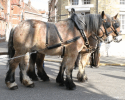
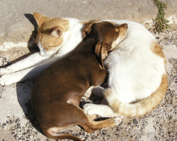
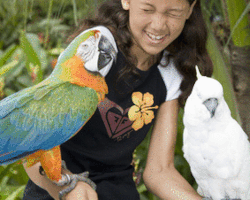
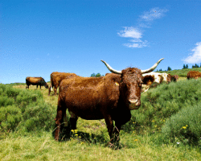

Les animaux domestiques
Parmi les animaux de compagnie, les poissons, les chats et les chiens sont les plus nombreux.
On peut adopter aussi des hamsters, des lapins ou d'autres animaux beaucoup moins courants comme les furets, les serpents, les rats, les lézards et même les araignées !
Parmi les oiseaux, le perroquet est sûrement l'animal de compagnie le plus étonnant puisqu'il imite toutes sortes de bruits et de sons ! Certains savent même parler.
Contrairement à une idée répandue, les chiens et les chats peuvent souvent vivre ensemble.
On rencontre des animaux domestiques dans les fermes, à la campagne. Ils sont élevés pour nous permettre de nous nourrir. Par exemple, la vache, le mouton et le cochon sont élevés pour leur viande. Mais la vache nous donne aussi son lait et la poule, ses œufs.
À la ferme, les animaux ont chacun leur maison :
- les vaches vivent dans une étable,
- les chevaux dans une écurie,
- les moutons dans une bergerie,
- les poules dans un poulailler, etc.
Les gros chevaux utilisés pour tirer des roulottes ou des carrioles sont appelés chevaux de trait.
|  |  |
|---|---|
| Cheval | Chien et Chat |
|  |  |
| Fille et Perroquets | Vache |